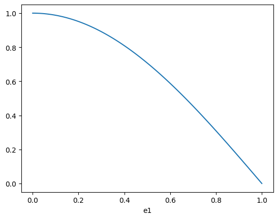
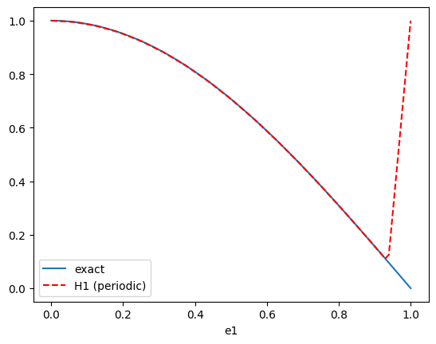
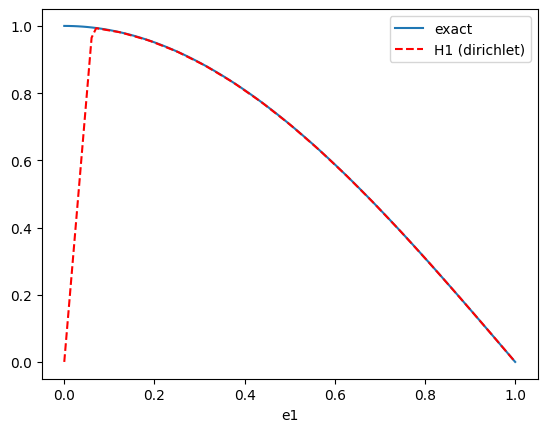
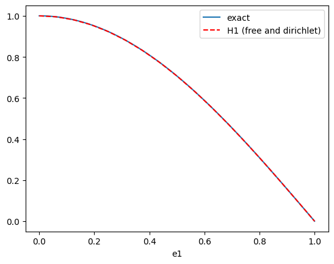
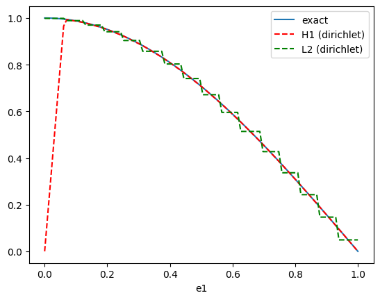
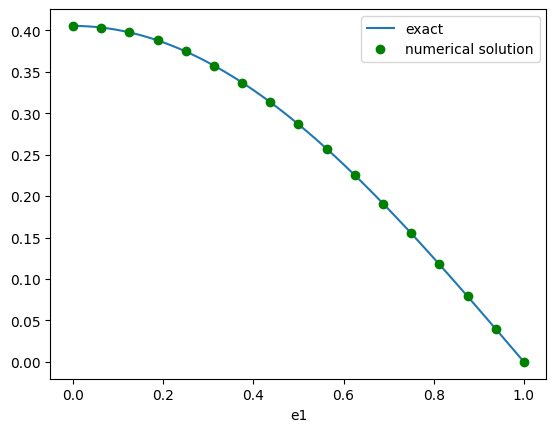
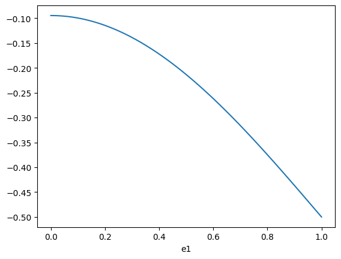
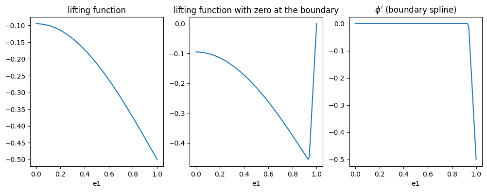

FEEC boundary conditions#
This tutorial focuses on boundary conditions in finite element exterior calculus (FEEC) within Struphy. It assumes you are already familiar with setting up a Derham object and using spline functions—if not, see the basics tutorial first.
Prerequisite: Complete the FEEC basics tutorial.
What you’ll learn:
How boundary conditions affect discrete function spaces
Essential vs. natural boundary conditions in weak formulations
Lifting functions for non-homogeneous Dirichlet conditions
How to set up and solve PDEs with different boundary conditions
For a comprehensive introduction to FEEC concepts, see the numerics section of the Struphy documentation and the references therein.
Boundary conditions: basics#
Our first aim is to project a simple function into the H1 and L2 spaces. We will do this for Derham objects with different boundary conditions and plot the results. Here is our function:
[1]:
import numpy as np
from matplotlib import pyplot as plt
fun = lambda e1, e2, e3: np.cos(np.pi/2 * e1)
e1 = np.linspace(0, 1, 100)
e2 = 0.5
e3 = 0.5
plt.plot(e1, fun(e1, e2, e3))
plt.xlabel('e1')
plt.show()

First, create a Derham object with 16 elements in the first direction:
[2]:
from struphy.feec.psydac_derham import Derham
from struphy.topology.grids import TensorProductGrid
from struphy.io.options import DerhamOptions
grid = TensorProductGrid(num_elements=(16, 1, 1))
derham_opts = DerhamOptions()
derham = Derham(grid, derham_opts)
By default, the spline degrees are 1 in each direction:
[3]:
derham.degree
[3]:
(1, 1, 1)
By default, the boundary conditions are periodic in each direction (no boundary conditions):
[4]:
derham.bcs
[4]:
(None, None, None)
Let us apply the geometric projector P0 into the discrete H1 space. The result will be of type StencilVector (see the basics tutorial for more on this):
[5]:
vec = derham.P0(fun)
print(type(vec))
<class 'feectools.linalg.stencil.StencilVector'>
The StencilVector thus holds FE coefficients. To get a function that we can evaluate at arbitrary points, we can use the create_spline_function method of the Derham object. This creates a callable object that evaluates the FE function at given points:
[6]:
fun_h = derham.create_spline_function(name="hello world",
space_id="H1",
coeffs=vec,
)
plt.plot(e1, fun(e1, e2, e3), label="exact")
plt.plot(e1, fun_h(e1, e2, e3, squeeze_out=True), "r--", label="H1 (periodic)")
plt.xlabel('e1')
plt.legend()
plt.show()

Ooops - something went wrong here! Indeed, the periodic boundary conditions are not compatible with the function we are trying to project. Let us change the boundary conditions to be non-periodic in the first direction, and periodic in the other two:
[7]:
grid = TensorProductGrid(num_elements=(16, 1, 1))
derham_opts = DerhamOptions(bcs=(("dirichlet", "dirichlet"), None, None))
derham = Derham(grid, derham_opts)
vec = derham.P0(fun)
fun_h = derham.create_spline_function(name="hello world",
space_id="H1",
coeffs=vec,
)
plt.plot(e1, fun(e1, e2, e3), label="exact")
plt.plot(e1, fun_h(e1, e2, e3, squeeze_out=True), "r--", label="H1 (dirichlet)")
plt.xlabel('e1')
plt.legend()
plt.show()

Wrong again! The homogeneous Dirichlet conditions do not respect the non-zero boundary condition on the left. Let us change the boundary condition to be free boundary on the left:
[8]:
grid = TensorProductGrid(num_elements=(16, 1, 1))
derham_opts = DerhamOptions(bcs=(("free", "dirichlet"), None, None))
derham = Derham(grid, derham_opts)
vec = derham.P0(fun)
fun_h = derham.create_spline_function(name="hello world",
space_id="H1",
coeffs=vec,
)
plt.plot(e1, fun(e1, e2, e3), label="exact")
plt.plot(e1, fun_h(e1, e2, e3, squeeze_out=True), "r--", label="H1 (free and dirichlet)")
plt.xlabel('e1')
plt.legend()
plt.show()

Voilà - that does the job. So far we projected into the discrete H1 space. For comparison, let us also project into the discrete L2 space, with the wrong boundary conditions for illustration purposes:
[9]:
grid = TensorProductGrid(num_elements=(16, 1, 1))
derham_opts = DerhamOptions(bcs=(("dirichlet", "dirichlet"), None, None))
derham = Derham(grid, derham_opts)
vec0 = derham.P0(fun)
vec3 = derham.P3(fun)
fun0_h = derham.create_spline_function(name="hello world H1",
space_id="H1",
coeffs=vec0,
)
fun3_h = derham.create_spline_function(name="hello world L2",
space_id="L2",
coeffs=vec3,
)
plt.plot(e1, fun(e1, e2, e3), label="exact")
plt.plot(e1, fun0_h(e1, e2, e3, squeeze_out=True), "r--", label="H1 (dirichlet)")
plt.plot(e1, fun3_h(e1, e2, e3, squeeze_out=True), "g--", label="L2 (dirichlet)")
plt.xlabel('e1')
plt.legend()
plt.show()

Two things to note here:
The discrete L2 space is less regular (piece-wise constant) than the discrete H1 space (piece-wise linear for degree
p=1).Even though we set the boundary conditions for the whole Derham complex, they are not actually applied to the L2 space, since this space does not have any boundary conditions. This is a common source of confusion for developers new to FEEC, so it is worth pointing out explicitly. It becomes clear when thinking of the 1d Derham sequence: applying the derivative to a function in \(H^1_0\) (with hom. Dirichlet conditions) gives a function in L2. But the derivative of the function in \(H^1_0\) at the boundary can have any value, and is not forced to be zero. This thought applies to any component of a spline function that is a
D-spline: they cannot be set to a specific value.
Neumann boundary conditions#
We solve the 1d Poisson equation
where the source \(\rho\) is given by the function fun defined above. We thus have the exact solution
where \(a\) and \(b\) are constants that depend on the boundary conditions. We will solve this equation with different boundary conditions and compare the numerical solution to the exact solution.
Case \(a = b = 0\):#
[10]:
mfct_solution = lambda e1: 1/(np.pi/2)**2 * np.cos(np.pi/2 * e1)
We start by loading the PDE mode Poisson and by setting fun as the source term:
[11]:
from struphy.models import Poisson
poisson = Poisson()
poisson.propagators.poisson.rho = fun
Next we set up the simulation object with appropriate grid and boundary conditions, then run the simulation for one time step:
[12]:
from struphy import Simulation
from struphy import DerhamOptions, grids
grid = grids.TensorProductGrid(num_elements=(16, 1, 1))
derham_options = DerhamOptions(bcs=(("free", "dirichlet"), None, None))
sim = Simulation(model=poisson,
grid=grid,
derham_opts=derham_options,
)
sim.run(one_time_step=True)
Starting run for model Poisson ...
WARNING: Class "BasisProjectionOperators" called with degree=(1, 1, 1) (interpolation of piece-wise constants should be avoided).
Stabilizing Poisson solve with self.options.sigma_1 =1e-14
Time stepping: 100%|██████████| 1/1 [00:00<00:00, 140.67step/s]
Struphy run finished.
Post porcessing and loading the plotting data in verbose mode yields:
[13]:
sim.pproc()
sim.load_plotting_data()
Post-processing path /home/runner/work/struphy/struphy/doc/_collections/tutorials/sim_1
Reading hdf5 data of following species:
em_fields:
phi: <HDF5 dataset "phi": shape (2, 19, 3, 3), type "<f8">
source: <HDF5 dataset "source": shape (2, 19, 3, 3), type "<f8">
100%|██████████| 2/2 [00:00<00:00, 1401.14it/s]
Creation of Struphy Fields done.
Evaluating fields ...
100%|██████████| 2/2 [00:00<00:00, 2124.24it/s]
Creating vtk in /home/runner/work/struphy/struphy/doc/_collections/tutorials/sim_1/post_processing/fields_data ...
100%|██████████| 2/2 [00:00<00:00, 1942.26it/s]
No kinetic data found in hdf5 file, skipping post-processing of kinetic data.
Loading post-processed plotting data:
Data path: /home/runner/work/struphy/struphy/doc/_collections/tutorials/sim_1/post_processing
The following data has been loaded:
grids:
self.t_grid.shape =(2,)
self.grids_log[0].shape =(17,)
self.grids_log[1].shape =(2,)
self.grids_log[2].shape =(2,)
self.grids_phy[0].shape =(17, 2, 2)
self.grids_phy[1].shape =(17, 2, 2)
self.grids_phy[2].shape =(17, 2, 2)
self.spline_values:
em_fields
phi_log
source_log
self.orbits:
self.f:
self.n_sph:
Let’s extract the grid in eta1 direction (corresponds to the x-direction for the unit cube mapping) and the solution phi:
[14]:
e1h = sim.plotting_data.grids_log[0]
print(e1h)
[0. 0.0625 0.125 0.1875 0.25 0.3125 0.375 0.4375 0.5 0.5625
0.625 0.6875 0.75 0.8125 0.875 0.9375 1. ]
[15]:
phi = sim.plotting_data.spline_values.em_fields.phi_log
print(phi)
type(self.data) = <class 'dict'>
len(self.data) = 2
key = np.float64(0.0) shape = [(17, 2, 2)]
key = np.float64(0.01) shape = [(17, 2, 2)]
We plot the solution to verify that it matches the exact solution:
[16]:
plt.plot(e1, mfct_solution(e1), label="exact")
plt.plot(e1h, phi.data[0.0][0][:, 0, 0], "go", label="numerical solution")
plt.xlabel('e1')
plt.legend()
[16]:
<matplotlib.legend.Legend at 0x7f72688c6710>

The boundary condition at e1=1.0 was set to dirichlet, which was correctly captured by the solver. The left boundary condition at e1=0.0 was set to free, so how did the solver capture the the Neumann boundary condition? The answer lies in the weak formulation of the problem, which is implemented in the Poisson model: find \(\phi \in H^1\) such that
Note that the left-hand side has been integrated by parts, but that the ensuing boundary term has been ignored:
The boundary term reads
where the second equality follows from the homogeneous Dirichlet condition at e1=1.0, yielding \(v(1)=0\). However, \(v(0)\) is free, so that vanishing of the boundary term implies
This is called a natural boundary condition: it is not explicitly enforced, but rather emerges from the weak formulation of the problem. In contrast, the homogeneous Dirichlet condition at e1=1.0 is an essential boundary condition, which is explicitly enforced by the chosen solution space.
Lifting boundary conditions#
We solve the same problem as above, but with different boundary conditions:
Case \(a = -0.5\), \(b = 0\):#
[17]:
mfct_solution = lambda e1: 1/(np.pi/2)**2 * np.cos(np.pi/2 * e1) - 0.5
[18]:
from struphy.initial.base import GenericPerturbation
tmp = lambda e1, e2, e3: mfct_solution(e1)
fun_lift = GenericPerturbation(tmp)
e1 = np.linspace(0, 1, 100)
e2 = 0.5
e3 = 0.5
plt.plot(e1, fun_lift(e1, e2, e3))
plt.xlabel('e1')
plt.show()

[19]:
grid = grids.TensorProductGrid(num_elements=(16, 1, 1))
derham_options = DerhamOptions(bcs=(("free", "dirichlet"), None, None))
poisson = Poisson()
poisson.propagators.poisson.rho = fun
poisson.em_fields.phi.lifting_function = fun_lift
sim = Simulation(model=poisson,
grid=grid,
derham_opts=derham_options,
)
[20]:
sim.allocate()
WARNING: Class "BasisProjectionOperators" called with degree=(1, 1, 1) (interpolation of piece-wise constants should be avoided).
Stabilizing Poisson solve with self.options.sigma_1 =1e-14
[21]:
var = poisson.em_fields.phi
plt.figure(figsize=(12, 4))
plt.subplot(1, 3, 1)
plt.plot(e1, var.spline_lift(e1, e2, e3, squeeze_out=True))
plt.xlabel('e1')
plt.title("lifting function")
plt.subplot(1, 3, 2)
plt.plot(e1, var.spline_0(e1, e2, e3, squeeze_out=True))
plt.xlabel('e1')
plt.title("lifting function with zero at the boundary")
plt.subplot(1, 3, 3)
plt.plot(e1, var.boundary_spline(e1, e2, e3, squeeze_out=True))
plt.xlabel('e1')
plt.title("$\phi'$ (boundary spline)")
plt.show()

[22]:
print(var.spline.space)
print(var.spline.derham.bcs)
print(var.boundary_spline.space)
print(var.boundary_spline.derham.bcs)
<feectools.linalg.stencil.StencilVectorSpace object at 0x7f7268bae410>
(('free', 'dirichlet'), None, None)
<feectools.linalg.stencil.StencilVectorSpace object at 0x7f726755a650>
(('free', 'free'), None, None)